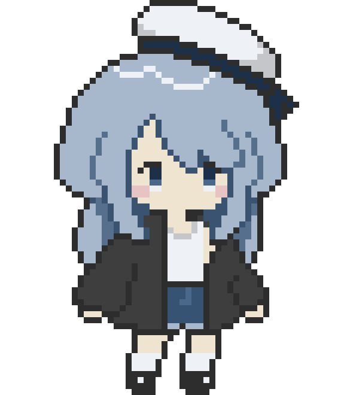
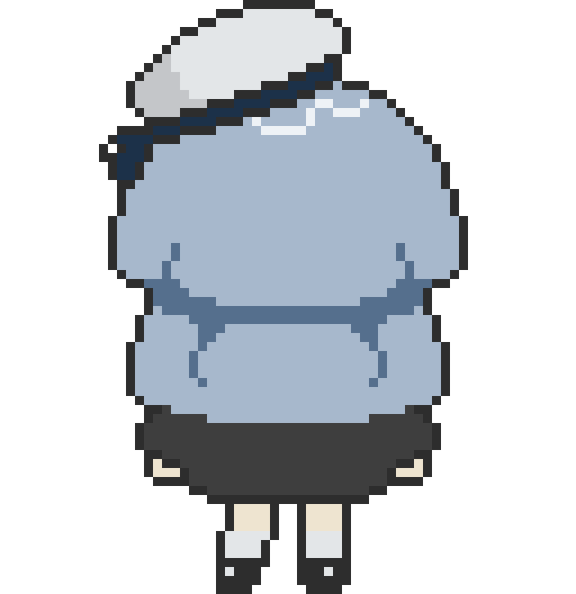
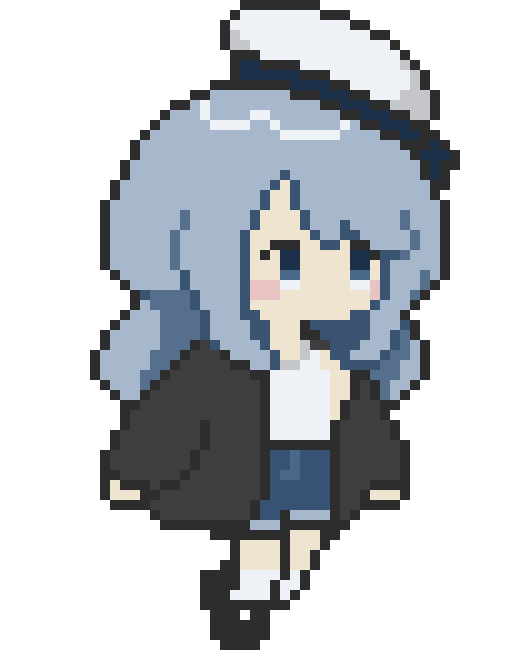

01 — What She's For
은아라 is supposedly my productivity help by assisting instantanous thought logging and development as a always on widget on screen.
The Goal
Building an always-on-top window that actually holds over fullscreen macOS apps and connects to claude for logging light chats and task systems that help externalize thinking — fluently, in both Korean and English — paired with a face that never gamifies engagement.
02 — The Face of the Assistant
Hand-drawn pixel art. A few silhouette-breaking details — the off-shoulder jacket, the long ribbon streamers — inspired from a jellyfish.



03 — How She Runs
The Dock icon is her only show/hide control, and she will engage if prompted through chat or by voice using an OpenRouter LLM. Still validating whether I want the widget to move around the bottom of the screen and drag&drop to move it away from screen content
Reactive Core
No notifications, no nudges. She answers when the conversation opens and holds still otherwise.
Bilingual by Default
Korean-English text chat, plus on-device Korean wake word detection via Porcupine.
Session Memory
Chat resumes from where I left off and thread compaction for long runs.
04 — Going Forward
The conceptual framework is established, mapping out the core user flows and interaction model. The next phase shifts from structural planning to technical execution—specifically, validating the core conversational model and building out the functional chat interface.